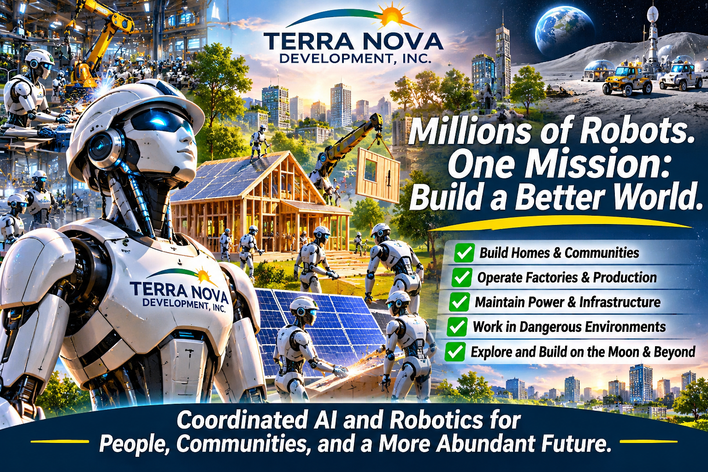

Article #008 · November 2026
Millions of Robots. One Mission: Build a Better World.
How coordinated artificial intelligence and robotics could serve humanity.

By Willis Butts · Terra Nova Development, Inc.
How coordinated artificial intelligence and robotics could expand humanity’s capacity to build, care, and explore
Terra Nova Development, Inc. • November 2026
An Army That Builds Instead of Fights
A recent post from The Science of Tomorrow asks a fascinating question: What if thousands—or eventually millions—of AI-enabled robots could work together as one connected workforce? Instead of fighting wars, they might build cities, run factories, maintain infrastructure, enter dangerous environments, and help prepare future lunar bases. The proposal is speculative, but its central insight deserves serious attention: coordination can be more transformative than any individual machine.
The Power of Coordination
A single robot can perform a specialized task. A coordinated system could assign different robots to surveying, transport, assembly, inspection, repair, and quality control. Shared scheduling and data could reduce idle time and help teams respond when conditions change. Human engineers and operators would still define objectives, oversee critical decisions, and intervene when something goes wrong.
Building Homes and Communities
Imagine construction sites where robotic equipment prepares land, moves materials, fabricates components, and assists skilled workers. Such systems might help make housing construction faster and safer, particularly when paired with standardized designs and responsible permitting. Terra Nova’s vision would prioritize homes, Community Havens, and public infrastructure—not technology demonstrations for their own sake.
Factories, Power Stations, and Dangerous Work
Robots already perform certain repetitive industrial tasks. Future coordinated systems could extend automation to inspection, logistics, maintenance, disaster response, and work in contaminated or otherwise hazardous locations. These applications require robust safety engineering, cybersecurity, reliable communications, and carefully bounded autonomy. The ability to perform a task is not the same as permission to perform it without supervision.
Beyond Earth
Robotic teams could be particularly valuable in space, where sending people is costly and hazardous. Machines might survey terrain, prepare landing sites, handle materials, or assemble infrastructure before astronauts arrive. Large-scale autonomous lunar construction remains an engineering challenge rather than an established capability.
Who Benefits from the Productivity?
The most important question is not whether robots can produce more. It is who benefits from the added productivity. If automation only concentrates ownership and income, its social potential will be limited. Terra Nova proposes a different goal: use rising productive capacity to make housing, food, energy, education, and essential services more accessible. That calls for deliberate choices about public benefit, worker transition, ownership, and fair access—not simply more machines.
A Responsible Development Roadmap
Start with small, measurable pilots: a warehouse logistics team, a building inspection project, or a supervised construction workflow. Compare results against conventional methods for cost, safety, quality, energy use, and reliability. Expand only after independent evaluation. Establish human accountability, fail-safe shutdowns, security testing, privacy safeguards, and transparent reporting. Train workers to design, operate, maintain, and govern these systems.
A Future Worth Organizing
The image of a digital army need not mean domination. It can mean an organized workforce directed toward human flourishing. Robots are tools, not a substitute for community or human judgment. The real opportunity is to coordinate technology, resources, and people toward shared goals. We already possess extraordinary knowledge. Our task is to use it wisely. There is no them. There is only us. We are one.
Source inspiration: “The Science of Tomorrow,” public Facebook post/reel shared by the user: https://www.facebook.com/reel/1041095392288204/
Support Terra Nova Development: https://buymeacoffee.com/billbuttso